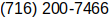

Steven Wilser
- Phone: 
- Email:

Education
- Bachelor of Science in Computer Science
- State University of New York at Buffalo, December 2016
- Bachelor of Science in Physics, Cum Laude
- Bachelor of Science in Physics Education, Cum Laude
- State University of New York College at Buffalo, December 2011
Publications
- MacIsaac, D., Ward, A., Wilser, S., (2019, December). A classroom demonstration RC circuit: The neon bulb relaxation oscillator. The Science Teachers Bulletin, 83(1), 29-38. Retrieved from https://stanys.org/Science-Teachers-Bulletin.
- Rai, R.C., Guminiak, M., Wilser, S., Cai, B., Nakarmi, M. L., (2012, April). Elevated temperature dependence of energy band gap of ZnO thin films grown by e-beam deposition. Journal of Applied Physics, 111. http://dx.doi.org/10.1063/1.3699365.
- Rai, R.C., Wilser, S., Guminiak, M., Cai, B., Nakarmi, M. L., (2011, August). Optical and electronic properties of NiFe2O4 and CoFe2O4 thin films. Applied Physics A: Materials Science & Processing, 106(1), 207-211. https://doi.org/10.1007/s00339-011-6549-z.
Research
- Thin Film Studies of Spinel Ferrite MFe2O4 (M = Ni, Co, and Zn), Summer 2009
- Undergraduate Research Program, Buffalo State College
- Inexpensive Very High Speed Photography for Mechanics, Summer 2008
- An Inexpensive Clothespin Microwave Transmitter and Receiver, Summer 2007, Poster
- Early Undergraduate Research Program, Buffalo State College
Presentations
- Poster at National Science Foundation Robert Noyce Teacher Scholarship Program Conference, Washington D.C., 2010
- Research poster at 12th Annual Student Research and Creativity Celebration, 2010
- Research poster at 11th Annual Student Research and Creativity Celebration, 2009
- Research poster at 10th Annual Student Research and Creativity Celebration, 2008
- Research poster at NYSS APS-AAPT Fall Symposium , Syracuse University, 2007
Projects
- History Fetcher - Linux Program, September 2022, Project Repository
- Parses the history data of Firefox and Chromium internet browsers and creates a txt or csv file containing the desired information for portable use.
- Perfect Toilet Time - Android App, Project Repository
- A crowd-sourced bathroom locator and review system
- Finds the nearest bathroom to the user’s current location
- Arduino Driven Light Sensitive Bicycle Lamp with Turn Signals
- Ambient light readings are detected through a photoresistor to automatically turn the lamp on
Work Experience
- Substitute Teacher, March 2012 – June 2014
- Grand Island Central School District, Grand Island, New York
- Sweet Home Central School District, Amherst, New York
- Graduate Course Assistant, Summer 2007, 2008, 2011
- Buffalo State College
- PHY510: Process Skills in Physics Teaching
- PHY620: Powerful Ideas and Quantitative Modeling: Force, Motion, and Energy
- PHY622: Powerful Ideas and Quantitative Modeling: Electricity and Magnetism
- Prepared and set up laboratory equipment for exercises and activities
- Teaching Assistant, August 2010 – May 2011
- Buffalo State College
- MAT126: Applied Calculus I
- MAT162: Calculus II
- Attended problem solving sessions where I provided assistance to students who were completing classwork problems
- Held office hours where I tutored students, conducted exam review sessions, and graded homework
Awards and Honors
- Misri Lal & Laxmi Devi Rutsgi Memorial Award Fund in Physics (Physics major with highest cumulative GPA and has performed research), 2010
- Inducted into Physics Honor Society, Sigma Pi Sigma, 2009
- Vernon Bullough Memorial Physics Award (Junior or senior with the highest major GPA in Physics Department), 2009
- All College Honor’s Program, Buffalo State College, 2007 – 2011
- Calculus Award, Buffalo State College, 2007
- Dean’s List, Buffalo State College, 2006, 2007, 2008, 2009
Campus Involvement and Affiliations
- President, Buffalo State College Physics Club, 2008
- Vice President, Buffalo State College Physics Club, 2007
- Organized club events, trips, and activities
- Society of Physics Students (SPS), member
Skills
- Bash Scripting
- C++
- SQL
- C
- Java
- Python
- Vim
- CSS
- HTML
- Git
- Android Studio
- UNIX and Unix-like operating systems
- Computer-Aided Design
Coursework
University at Buffalo
- Software Engineering
- Operating Systems
- Theory of Computation
- Pattern Recognition
- Programming Languages
- Systems Administration
- Algorithms
- Realtime Embedded Systems
- Data Structures
- Computer Organization
- Discrete Structures
- Digital Systems
- Applied Probability & Statistics
Buffalo State College
- Classical Mechanics
- Electricity & Magnetism I, II
- Quantum Mechanics
- Advanced Lab
- Computational Physics
- Theoretical Physics
- Modern Physics I, II
- Circuit Analysis
- Differential Equations
- Calculus I, II, III